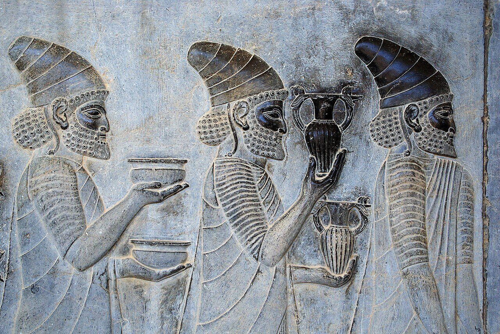
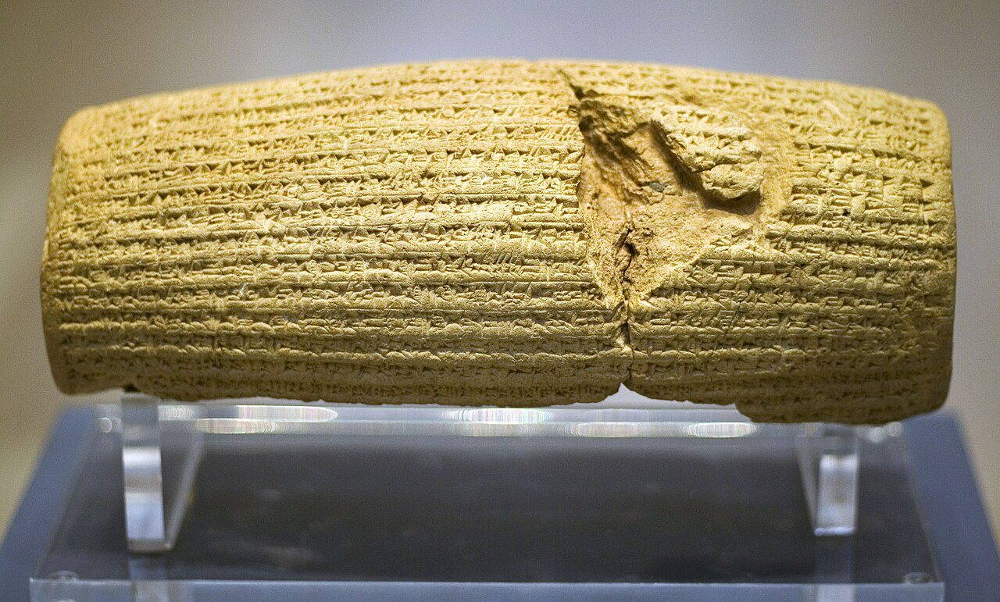
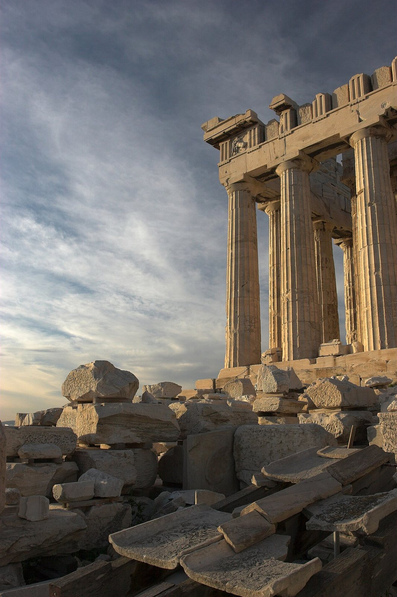
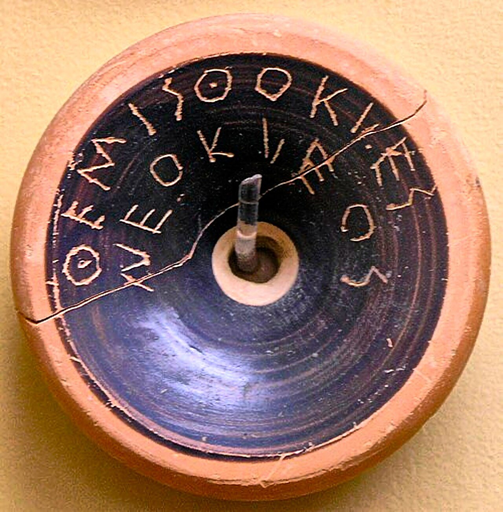

사진 · 페르세폴리스 아파다나 계단의 사절 부조
중학교 역사① · 2단원 문명의 발생과 고대 세계의 형성
제국페르시아와 그리스
페르세폴리스 아파다나 계단 부조 · 사진 Phillip Maiwald · CC BY-SA 3.0
“큰 제국과 작은 도시,
큰 제국과 작은 도시,
어디가 살기 좋았을까?
사실넓은 땅의 왕, 작은 도시의 시민
해석누가 나라 일을 정했나
확장나라면 어디에 살고 싶을까

사진 · 정복자는 왜
관용을 새겼을까?
정복자는 왜
관용을 새겼을까?
누가페르시아 왕 키루스 2세
누구에게정복한 바빌론 사람들
사실·주장‘최초의 인권 선언’일까
키루스 원통 · 영국 박물관 · 사진 Prioryman · CC BY-SA 3.0
왕의 길
사실약 2,500km, 곳곳의 역참
해석말을 갈아타는 전령
확장길은 무엇을 날랐을까

사진 · 폴리스
폴리스도시가 곧 나라
파르테논 신전 · 사진 Thermos · CC BY-SA 2.5

사진 · 도자기 조각에
왜 이름을 썼을까?
도자기 조각에
왜 이름을 썼을까?
사실테미스토클레스
해석도편 추방제
확장같은 손글씨 190장
테미스토클레스의 이름이 적힌 도편 · 아테네 고대 아고라 박물관 · 사진 Marsyas · CC BY 4.0
누가 투표할 수 있었나?
남성 시민○
여성✕
노예✕
외국인✕
누가 쓴
전쟁 이야기일까?
사실마라톤(490), 살라미스(480)
누가그리스인 헤로도토스
확장페르시아 쪽 이야기는 어디에
섞임
사실알렉산드로스의 원정
해석그리스와 오리엔트가 만나다
확장헬레니즘
제국과 폴리스
넓은 평화제국
시민의 참여폴리스
빠진 사람들둘 다
오늘의 민주주의
사실우리 반의 회의
해석아테네와 무엇이 같고 다를까
확장지금도 투표하지 못하는 사람은
“내가 살고 싶은 나라는 이다.